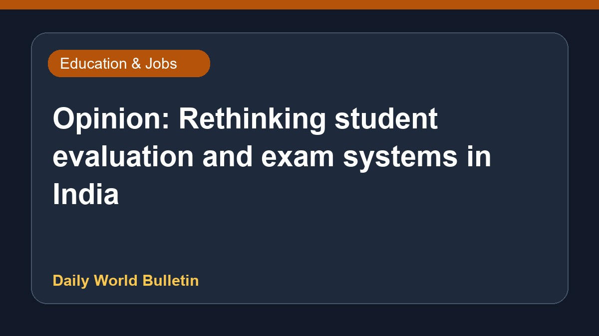

Opinion: Rethinking student evaluation and exam systems in India

An opinion piece discusses the shortcomings of current examination systems in India and emphasizes the urgent need to rethink how students are evaluated. The commentary highlights concerns that traditional testing methods often fail learners, prompting a deeper look into alternative approaches within the country's academic framework. Specific details regarding policy proposals or evaluation reforms are limited in the provided source text.
Original source: Education News Sources
Opinion: When exams fail students — rethinking evaluation in Indian education - telanganatoday.com ↗
Opinion: When exams fail students — rethinking evaluation in Indian education - telanganatoday.com ↗